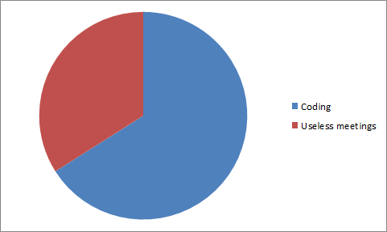
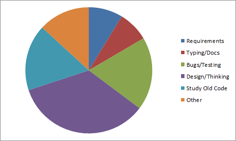
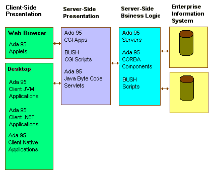

![[SparForte]](art/sparforte.png)
![[Banner]](art/header_cloud.png)
![[Top Main Menu]](art/menu_left.png) |
Intro | Tutorials | Reference | Packages | Examples | Contributors |
| | |||||||||||||||
| ||||||||||||||||
Why It WorksHow It StartedAn Age of Hype In the book "Facts and Fallacies of Software Engineering", long-time software design researcher Robert L. Glass discusses many myths of running a computer division in a modern company. The reality of computing is that most new techniques, bureaucratic processes, advanced tools and management methods simply don't live up to their promises. Glass describes it in this way: "Hype is the plague on the house of software. Most software tools and technique improvements account for about 5 to 35 percent increase in productivity and quality. But at one time or another, most of those same improvements have been claimed by someone to have 'order of magnitude' of benefits". There's been any number of so-called "magic bullets": smarter editors, extreme programming, agile programming, CASE tools, object-oriented programming, Service Oriented Architecture, etc. Some of these had no improvement in productivity, others small improvements. But none of these were the break-though techniques that would improve productivity by a factor of 10 or more. Even the optimistic value of 35%, according to Mr. Glass, was not achieved through some new technique. That's the improvement gained by code reuse--breaking your program up into reusable subroutines by defining plain old functions or classes. A little common sense would back that up. Consider programming languages. Java was designed as an improved version of C++. Problems are expressed in the same way as C++. The fundamental syntax is the same, with the same well-known flaws. Java and C++ (and C# for that matter) are tools of the same category. So one should not expect Java to make exponential productivity improvements over C++. The same is true of PHP versus Perl as PHP was based on Perl. So where does that leave my claims about SparForte as a better way to develop software? Is it hype like extreme programming? Old Software Never Goes Away... Unlike Java, SparForte was not designed to remove annoying quirks in a programming language. It was not intended to be an enhanced Bourne Shell or to solve the problems of Ada 95, the language it is based on. SparForte was designed to solve problems in software management problems in businesses environments. I was perplexed with the problem that I refer to as code aging. I once worked in a company that had created a simple shell script to print a Windows spreadsheet on a UNIX printer. This shell script grew and grew until it became a web-based report generator with thousands of lines of programming. But the programming was all written in shell scripts. Shell scripts use a different programming paradigm than other programming languages. Shell variables do not function like variables in other languages. Shell if statements do not function like if statements in other languages. To convert a shell script into a standard programming language, the solution would have to be constructed in a different way. That means a total rewrite of the software. What was needed was a shell that used the same paradigm as another, more popular programming language. There are plenty of shells based on My Favourite Language. What I needed was a language to solve the code aging problem: something designed to handle small programming that could evolve and grow to millions of lines of code maintained by dozens of developers without falling apart under the language's limitations. The only top-20 programming language to meet that criteria was Ada. Ada is a language designed from the ground up for large teams, large-scale development and high reliability. Projects scale up over time and Ada was a language designed to be scalable. It was the only suitable language on which to base SparForte (Is Ada Good for My Business?, Aonix White Paper). Why No Bullets? This problem of software failing to be maintained as it grows or changes is not new. Author Jaron Lanier expressed the same concerns in the "Wired 24/7" episode of TV Ontario's current affairs program, "The Agenda". Lanier pointed out that hardware follows the predictable pattern of Moore's Law while software does not. "Sometimes," Mr. Glass writes, "I think what is happening is a kind of 'hardware envy'. Our computer hardware brethren have made remarkable progress in a few decades that computer hardware has been produced. Cheaper/better/faster happens over and over again in that hardware world. Friends who study the history of technology tell me that progress in the computer hardware field is probably faster than that in any other field, ever. Perhaps we in software are so envious of that progress that we pretend that it is happening--or can happen--to us." I would also agree with Mr. Glass that the software industry lacks a lot of serious, objective evaluations of claims. The problem is not limited to the software industry. In Wired magazine (Wired Home Page), researcher David Eddy discusses the problem of getting good evidence in medical trials. In the late 1980's, Eddy recommended that insurance companies not fund a new and risky cancer treatment on the grounds that it had no solid proof of results. "The dispute ignited the national media. 'The country was in a furor," Eddy says. 'We held the line and stopped a dangerous treatment,' he says. 'The first rule is Thou Shalt Have Evidence.'" ("The Body Synthetic", Wired December 2009). The cancer treatment was later proven to be a failure. Different Approach, Different Results The Stephen F. Zeigler study (Comparing Development Costs of C and Ada, Rational White Paper, also referenced in "Business Shell: Critics say 'I Don't Get It'", Lone Coder), which shows Ada delivers projects with many times less bugs that the leading conventional language, and with 50% less cost, is based on only one project (although that project had nearly two million lines of code and had large teams of skilled developers). It also hasn't be repeated, to the best of my knowledge, with tools developed in the last few years. True, the Business Shell is only version 1.0 and there's a lot more I would do with it if I had time, funding or an active development community. I think there is a lesson here. The SparForte approach has a lot of surface improvements over conventional languages ("Doing it Right with the Business Shell", Lone Coder). However, what makes the Business Shell more than hype is that it is designed to tackle big, enduring projects. It requires a different way of thinking about software. That's what it takes to invent truly revolutionary software technology. Can the SparForte approach improve productivity by a full order of magnitude? That's not feasible for any software tool or management technique. Yet there are valid studies that suggest it could greatly improve quality and cut production costs by half over the long term. That's a lot better than CASE tools, Extreme Programming, Agile Programming or even object-oriented programming have deliver. This is because it looks at the big picture. Software tools and methodologies often focus on short-term issues for product delivery, not the long-term problem of managing software. The software industry needs more people working to solve the big problems and we need more unbiased evidence to qualify how we can put these techniques and tools to best use. Ken Burtch A Programmer's Day
A typical programmer views his day as doing productive coding or sitting in toxic meetings.  If this view is true, a good language is one that makes coding faster. One that automates work, reduces keystrokes. But in "No Silver Bullet", an essay by Fred ("I invented the 8-bit byte") Brooks, Brooks claims that no programming language produces more than a 5% improvement over another. This doesn't match up with the view of a programmer's day, where there's a lot of time spent coding and a small improvement in any of it should give a good reward. The graph above is how a programmer feels their time was spent. It's "gut level reasoning", how it feels in their emotions. Video tapes of programmers show that they spend very little time typing at all. When you're working on solving tough problems, you may not be aware of what you are actually doing. Programmers are terrible at evaluating how they spend their time. When you scientifically examine the work done over the life of a project, the results will vary depending on the project, but on average a programmers's time looks like this:  In this view, it's clear why most scripting languages (including PHP, Perl, Ruby and Lua) are really all the same: they all focus on a tiny slice of the programmer's day, the time spent typing. What they should be focusing on are the big slices of time: maintenance/studying old code, designing/thinking and debugging/testing. The language that saves you the most here will save you the most time over a project. As projects get larger, these issues become more important. They also get more important as a project ages. (Code Complete 2) Why SparForte is DifferentSparForte doesn't aim to minimize keystrokes. It targets solutions to what studies show are real problems in today's software teams:
By tackling these issues, SparForte attempts to greatly reduce the cost of software development and maintenance and improve the overall quality of the work. A Strong FoundationAs long as the command prompt, compiled applications, web templates and scripts remain in fundamental dischord, these issues will be difficult to solve. These development tools cannot agree even on basic issues as to what constitutes a boolean, the working of a for loop, or the syntax for an associative array. There needs to be some structural design agreement between the development tools in order to create an enterprise-wide, open source software environment standard. SparForte is part of a set of tools built around the ISO Ada standard to create a standardized framework for create applications. The other tools include:
Together, these tools compose a standardized framework for developing web templates, server applications, client side JVM and .Net applets, scripts and enterprise-wide computing. In all cases, the basic data types, control structures and libraries available to the developer have the same names, the same syntax and the same semantics. A boolean at the command prompt is like a boolean in a script is like a boolean in an HTML template and so forth. There is agreement at a fundamental structural level between the development tools. This agreement promotes code reuse, simplifies training and peer review, reduces modal thinking errors, makes code age-able and scalable. In order to achieve standardization, ABEE uses the Ada 95 language. Ada 95 is the only open source language that provides all of the following functionality:
Across a Business: An Enterprise SolutionThe following chart shows how SparForte, JGNAT, A# and GCC Ada/GNAT form a multi-tier web development framework comparable to Java's J2EE:
 Figure: A Multitier Enterprise Application Model with SparForte (BUSH) Client-Side
Presentation On a user's desktop, native Ada 95 applications can be created with the Win32 version of Ada Core Techologies' GNAT (another name for GCC Ada) or one of the commercial desktop Ada compilers. Alternatively JVM applications can be created with Ada Core Technologies' JGNAT Java byte code compiler. Or create .Net applications using A#, the Ada .Net compiler. You can also create JVM or .Net applets to run in a client's web browser. In all these cases, using Ada means that developers need to know only one core language. Server-Side Presentation The web server can use SparForte web
templates to create web pages with embedded AdaScript code. Like
JSP, ASP, PHP and similar products, SparForte can connect to databases and
generate new web content dynamically. SparForte templates can
communicate to the other layers by opening TCP/IP sockets (for remote
machines) or by files (on local machines). Using AdaScript for
your templates means that developments use the same core language as
used in the other layers. Server-Side Business Logic To manage and cache information, compiled applications and server software can be built using GCC Ada. The server software gain the speed advantage of binary code for the host machine while still being able to communicate with the other tiers through files, TCP/IP sockets. Cluster computer can be done using GCC Ada's GLADE environment: GLADE partitions a single application over multiple computers without worrying about the underlying operating system. You can also share objects using Ada's CORBA implementation. Process control and information flow can be coordinated by SparForte scripts. Enterprise Information Systems SparForte has integrated support for SQL so there usually no reason to reply on a database client program. The stored procedure language for most databases is very similar to AdaScript and is intuitive to learn and use if developers are already familiar with SparForte. The database package with SparForte is also available with GCC Ada applications. At each layer, developers will need to know only one core language, with the same basic constructions and types. For example, a "for loop" is written the same way in any tier, whether for a .Net application or a SparForte web template. This reduces training costs and makes source code portable between the tiers over solutions that require different languages at each tier. In addition, the same core packages are available (string handling, math, lock file handling, I/O, and others).
In comparison, consider Sun's Java 2 Enterprise Edition (J2EE) environment. Java "components" (small applications) can be distributed across an information system using secure connections to negotiate with one another. Ignoring Sun's marketing buzzwords, you can see that the open source SparForte approach is as good as or superior to J2EE:
J2EE is not your only solution for writing multitiered enterprise applications. The SparForte strategy offers the same advantages as solutions offered by Sun. Reusable components, client interaction using HTML/XML/HTTP, scalability and high availability over a network are all possible with a SparForte strategy. Ada-SparForte allows applications to be written once and run everywhere, supports CORBA technology to interface with existing enterprise resources, and creates a single standard that can be use effectively throughout an enterprise. Plus you get to use a truly scalable language system that cuts down training expenses and allows applications to be "scaled up" with minimum effort. Commercial OptionsGCC Ada is available in an award-winning, commercial, supported edition called GNAT Pro. Aonix produces a commercial Ada compiler for Linux and other platforms. How SparForte Manages Code Aging: The Progressive Development ModelSparForte recognizes a fundamental problem in business programming. Programmers with limited time and resources are often required to write up quick scripts to solve pressing business problems. Once the script is written, they have no time to return to the script to write a "proper" solution. Scripts, designed for rapid and simple solutions, continue to grow and mutate, becoming rapidly unreadable and easily broken, leaving a complete rewrite in a different language as the only way to upgrade the software. To combat this problem, SparForte scripts can be developed using a progressive development model. In its native mode, SparForte provides a quick and easy environment to write short Linux programs. Like BASH, Perl, PHP or Python, variables can be declared anywhere and can be typeless. Although its structure is relaxed compared to a compiled programming language, SparForte's syntax is both easy to read and provides much more security against typing errors. Common errors in these other scripting languages such as missing a quotation or spelling mistakes on variable names are quickly caught. As an SparForte script grows over time, becoming longer and carring more responsibility, the structure of the script can be improved by using "pragma ada_95". This SparForte directive disables many of the "lazy" features such as typeless variables and requires closer conformation to GCC Ada. A programmer can "tighten" his code as part of his regular duties, add type checking, and ensure that the script's structure is sound and the source is readable without resorting to a complete rewrite. Some important scripting features, like running commands in the background with "&", are still allowed. Finally, if the SparForte script continues to grow and is no longer suitable as a script, the script can be compiled with minimum changes as an Ada program. With other shells and scripting languages, a developer would have no choice but to rewrite the script "from scratch". SparForte also has built-in obsolecense control using "pragma deprecated" (or "pragma depreciated"). This marks obsolete scripts or templates being phased out of a project, allowing them to be removed in a controlled manner without disrupting the project. |
||